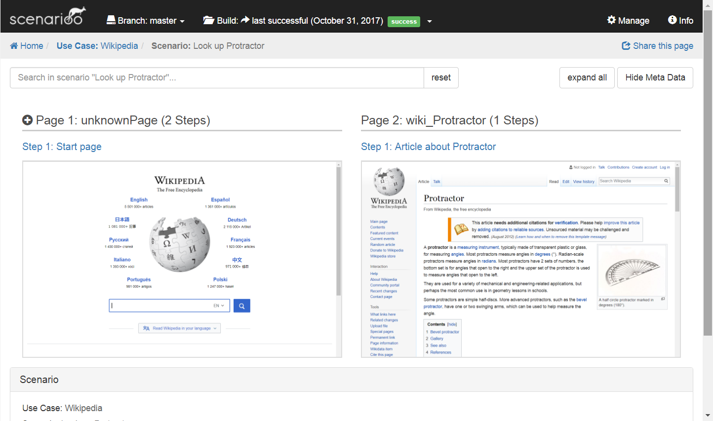

Quickstart with ScenariooJS
The aim of this page is to describe the minimal viable setup of Scenarioo from scratch using protractor and the scenarioo-js writer library.
For more detailed informations about Scenarioo-JS and its usage please refer to the documentation of ScenariooJS here: ScenariooJS Documentation
Prerequisites
Install the latest npm LTS version
Install the latest Google Chrome version
Minimal Protractor Test
Create an empty folder for the project.
Open the folder in a console.
Create an initial package.json file:
npm init -y
Install protractor:
npm install -D protractor
Create folder tests with file wikipediaTest.js. Add content:
describe("Wikipedia", function() {
it("Look up Protractor", function() {
browser.get("http://www.wikipedia.org");
element(by.id('searchInput')).sendKeys('Protractor');
element(by.css('#search-form button')).click();
expect(element(by.id('firstHeading')).getText()).toBe("Protractor");
});
});
Add file protractor.conf.js in project folder, add content (waitForAngularEnabled() is required because the page we are going to test is not an Angular page):
exports.config = {
specs: [ "tests/*.js"],
onPrepare: function() {
browser.waitForAngularEnabled(false);
}
}
Add script to package.json:
"scripts": {
"pretest": "webdriver-manager update",
"test": "protractor protractor.conf.js"
},
Run the test:
npm test
Minimal Scenarioo Integration
Add the scenarioo-js writer library:
npm install -D scenarioo-js
Extend protractor.conf.js as follows.
a) Add at the beginning of the file:
var scenarioo = require("./node_modules/scenarioo-js");
b) Add in onPrepare function:
scenarioo.setupJasmineReporter(jasmine, {
targetDirectory: 'scenarioo-output',
branchName: 'master',
branchDescription: '',
buildName: 'build_' + new Date().getTime(),
revision: ''
});
Change the test wikipediaTest.js by adding a require statement for Scenarioo and scenarioo.step() calls after each action:
var scenarioo = require("../node_modules/scenarioo-js");
describe("Wikipedia", function() {
it("Look up Protractor", function() {
browser.get("http://www.wikipedia.org");
scenarioo.step("Start page");
element(by.id('searchInput')).sendKeys('Protractor');
scenarioo.step("Entered search term");
element(by.css('#search-form button')).click();
scenarioo.step("Article about Protractor");
expect(element(by.id('firstHeading')).getText()).toBe("Protractor");
});
});
Run the test again (as we have integrated Scenarioo now):
npm test
Disclaimer: we are using the legacy (plain Jasmine) syntax for this example to keep it as simple as possible. We recommend using the Scenarioo Fluent DSL instead, as it has many advantages.
Install Viewer to Browse Output
Download the latest Scenarioo Release.
Configure the Scenarioo data directory where Scenarioo can store and read its data. Create the file
application.propertiesnext to the downloaded war with the following line:scenarioo.data=<path to a directory where scenarioo can store its data>Start up Scenarioo with
java -jar scenarioo-x.y.z.war.Access Scenarioo viewer under: http://localhost:8080/scenarioo
If you can't access this page, make sure no other application is using port
8080.Click the use case "Wikipedia" and then the scenario "Look up Protractor". You should see this screen:
